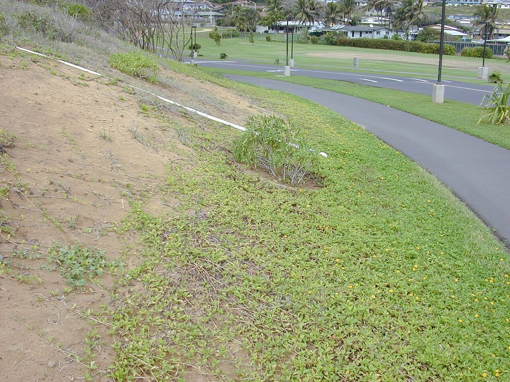
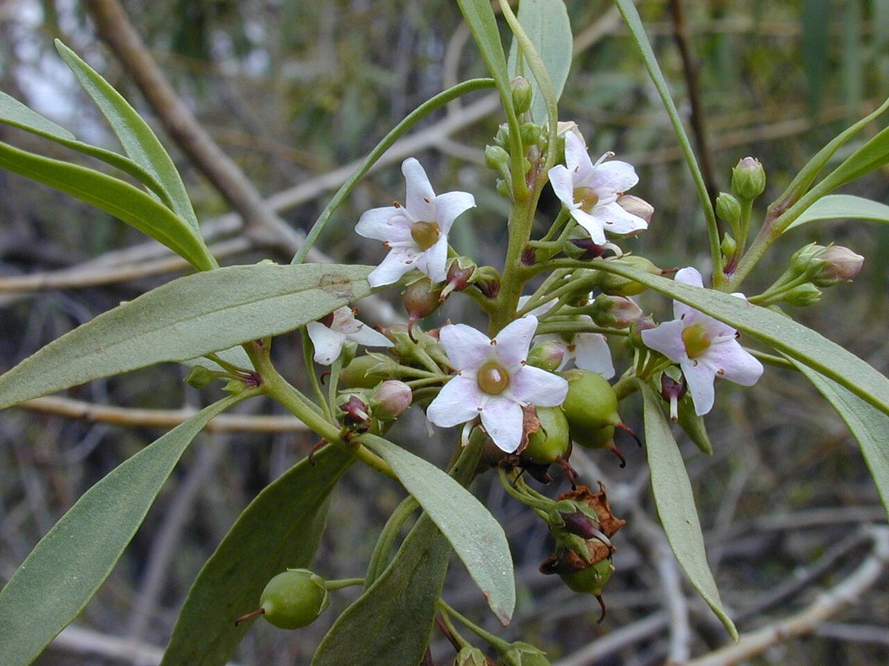
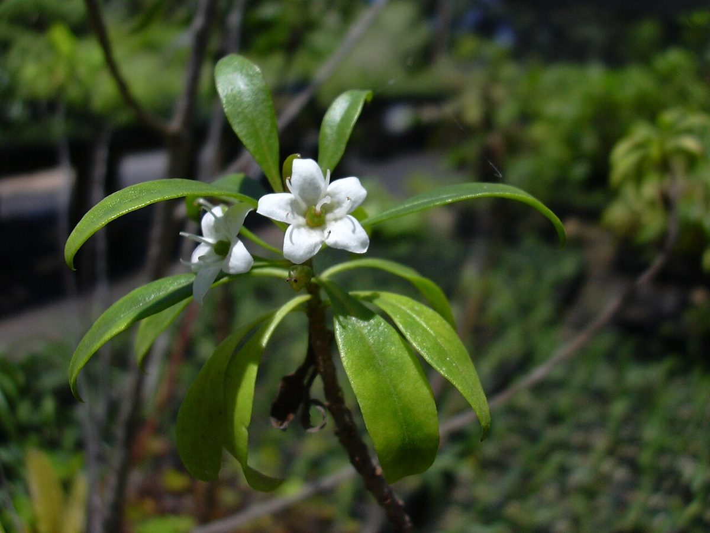

Myoporum sandwicense
naio · false sandalwood, bastard sandalwood



Quick facts
| Family | Scrophulariaceae |
|---|---|
| Scientific name | Myoporum sandwicense |
| Hawaiian name(s) | naio |
| English name(s) | false sandalwood, bastard sandalwood |
| Status | Indigenous (native, non-endemic) |
| Conservation | — |
| Coastal zones | Sea cliff Valley mouth Beach strand |
| Occurrence | Naio is extraordinarily variable in form across an altitudinal gradient — from prostrate shore mats to interior forest trees. On the unpopulated Kauaʻi coast it is a shrub-to-small-tree of dry cliff bases and back-beach slopes on the Nā Pali–Kona (drier western) sector. |
How to identify
- Growth form
- Evergreen shrub or small tree; growth form depends on exposure — windswept coastal populations are compact and often prostrate, more sheltered plants become upright small trees.
- Size
- 1–4 m on the coast (up to ~15 m in interior mesic forest).
- Leaves
- Alternate, lanceolate to obovate, 4–10 cm long, thick and somewhat fleshy, with resinous glands — visibly gland-dotted when held to the light and aromatic when a leaf is crushed.
- Flowers
- Small, 5-lobed, tubular-campanulate, 6–10 mm across, white to pale pink, with distinctive dark purple spots inside the throat; borne in small clusters in the leaf axils.
- Fruit / seed
- Small ovoid drupe, 4–8 mm long, ripening pink → purple then whitish at maturity.
- Bark / stem
- Pale grey and smooth on young stems, becoming furrowed on older trunks.
- Where it sits on the coast
- Dry sea-cliff bases, back-beach shrub zones, and the drier valley mouths of the western Nā Pali coast.
Clinchers (features that lock the ID)
- Alternate, gland-dotted, aromatic-when-crushed leaves.
- Small tubular white flowers with dark purple spots inside the throat.
- Small pink-to-purple drupes ripening whitish.
- Highly variable in form but leaves are always resin-dotted and aromatic.
Look-alikes
- Osteomeles anthyllidifolia (ʻūlei) — Also a coastal shrub, but ʻūlei has pinnately-compound leaves with rounded leaflets and white five-petalled rose-family flowers — nothing about it is glandular or tubular.
- Chenopodium oahuense (ʻāweoweo) — Some prostrate coastal chenopodium forms can look similar at a distance; chenopodium leaves are grey-green and mealy-scurfy (not resin-dotted), and its tiny wind-pollinated flowers are greenish, never tubular with purple spots.
Ecology
A widespread Pacific coastal-to-montane species (native populations also on Mangaia and Mauritius through the genus). Since 2009 Hawaiian populations have been threatened by naio thrips (*Klambothrips myopori*), an invasive insect discovered on Hawaiʻi Island that causes serious dieback; DLNR-DOFAW considers it a significant threat to naio across the archipelago. [1], [2], [3], [8], [31], [34], [38]
Cultural significance
In the early 1800s, when the export sandalwood (ʻiliahi, *Santalum* spp.) trade had exhausted true sandalwood stocks, Hawaiian and foreign traders shipped naio wood as a substitute — hence the English names "false sandalwood" and "bastard sandalwood," a historical episode Hawaiian writers have documented as an example of extractive pressure on native forests. Wood was also used historically for house posts, fence posts, and tool handles; this guide names those relationships without giving working instructions.